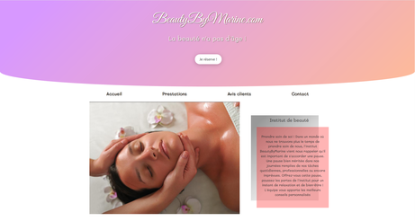
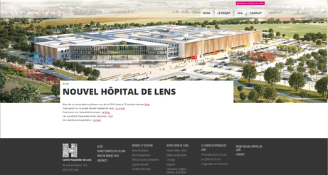

Création d'un site d'esthétique pour une esthéticienne indépendante
Jeremy Thery
Web Developer
Hello!
Développeur passionné, je suis actuellement à la recherche d'un stage de fin d'étude.
J'aimerais approfondir mes compétences dans le développement d'application Web, je me tiens régulièrement à jour sur les technos du moment et même si je suis encore débutant j'aimerais avoir l'opportunité de participer au développement d'un projet Web similaire.
Details
Phone:
06.58.53.99.82Email:
contact@thery-ble.com
Adress:
20 rue Marcel Carne
62800
Liévin, France
Permis:
B
Profile
"There is no end to education. It is not that you read a book, pass an examination, and finish with education. The whole of life, from the moment you are born to the moment you die, is a process of learning."
Jiddu Krishnamurti.
Quelques mots sur moi
Jusqu'à présent, dans ma vie, je passais de moments actifs avec beaucoup de variété, de défis et d'improvisations, à des moments de tranquillité et de stabilité, où il était difficile de rester dans un lieu pendant longtemps. Je me considère comme une personne tolérante et respectueuse, ouverte d’esprit. J'aime beaucoup écouter les histoires et les antécédents personnels ainsi que leurs expériences différente.
Education
Titre professionnel de Développeur Web/Mobile (Bac +2) - Grand école du numérique - Popschool Lens
Mention complémentaire de Vente à distance (Bac +1) - Lycée Maximilien de Robespierre - Lens
Baccalauréat Professionnel Commerce (Bac) - Lycée Maximilien de Robespierre - Lens
Skills
Hard Skills
Languages de programmation & outils
Soft Skills
- Curieux
- Sportif
- Sens du collectif
- L'esprit d'entreprendre
Featured Projects


Work Experience
Developer Web CHLENS, 2018-2019
Création du site de présentation du nouvel Hôpital de lens
- Cahier des charges
- Maquettes (Wireframe, Marvel app...)
- Intégration sur CMS (Wordpress)
- Relation clients
Vendeur pour particuliers (Internet/Mobiles …) SFR, 2017
Conseiller et vendre des abonnements internet/mobiles, et faire des tests de S.A.V pour le matériel deffectueux
Télé-vendeur (Programme rééquilibrage alimentaire)COMME J'AIME, 2017
Vendre les différents programmes de rééquilibrage alimentaire avec force de persuasion (appels entrant, prospection).
Conseiller Clientèle des Particuliers (Internet/Mobile…) ORANGE, 2014 - 2017
Répondre à la demande du client par téléphone (appels entrant/sortant), en respectant les objectifs fixés.
Intérêts & Loisirs
Je suis un passionné de technologie et de comportement humain. Tous les deux déterminent presque tous mes intérêts et mes passions.
- Visiter de nouveaux lieux
- Rencontrer des gens
- Avoir de nouvelles experiences
- Web developpement
- Jeux videos
- Manga et Anime